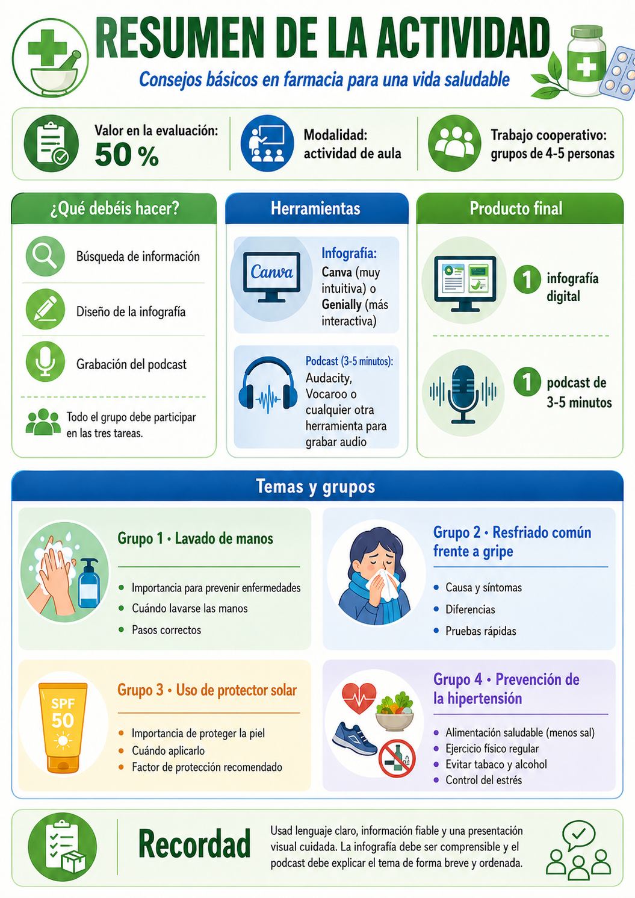

Presentación del proyecto
Esta actividad tendrá un valor del 50 % del RA3 y el RA4 . Se realizará en grupos de 4 o 5 personas. Todas las personas del grupo deben participar de forma activa en las tres partes del proyecto:
- Búsqueda de información.
- Diseño de la infografía..
- Grabación del podcast.
El proyecto tratará sobre consejos básicos en farmacia para una vida saludable. Cada grupo trabajará un tema distinto y elaborará dos productos finales:
Producto 1: una infografía.
Producto 2: un podcast de entre 3 y 5 minutos.
El objetivo es transformar información sanitaria en mensajes claros, comprensibles y útiles para la población general.
